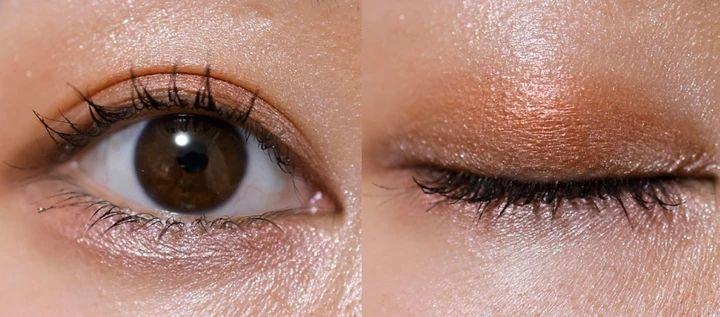
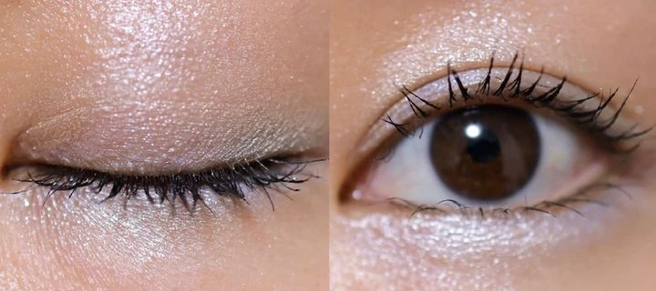
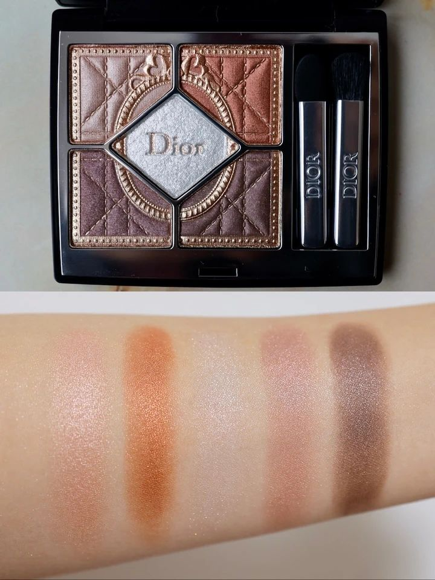
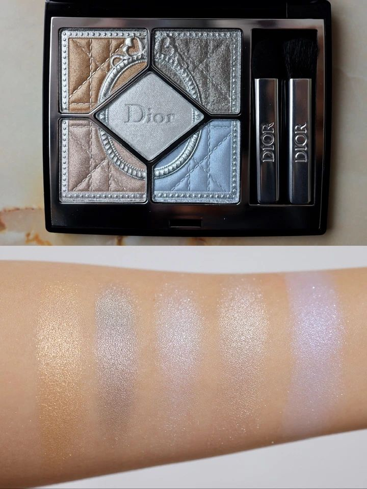

BAILA／立花ゆうり，TRILL转载。媒体参考图，非本人试妆。
本地审核预览 · 日媒试妆整理 · 非本人亲测 · 图片使用权限待确认
# Dior D03｜623 vs 926 小红书审核稿 采集日期：2026-10-14（日本时间）。状态：待审核，未发布。定位：日媒试妆整理＋选色分享，非本人亲测。 ## 标题 3 选 1 1. Dior圣诞眼影623和926怎么选？（推荐） 2. 肉桂暖光还是冰蓝？Dior圣诞双盘 3. 看完日媒试色，Dior这两盘好难选 ## 正文 节日眼影最纠结的地方，大概就是：想让妆容比平时亮一点，又怕买回来只用一次。今年 Dior 圣诞五色眼影的两盘，恰好把这个选择摆到了眼前——623 是带温度的肉桂铜棕，926 则是银光和冰蓝。都很有节日感，但想画出来的氛围并不一样。 先说明，这篇是我整理的日本新品情报与日媒试妆参考，还没有自己上眼测试。图中的手臂试色和眼妆来自美容家立花ゆうり在 BAILA 的试妆文章，TRILL 有转载。下面会把媒体实际呈现的妆效，和我根据配色想到的搭配方式分开说，方便大家判断要不要去柜台试。 🤎 623 シナモン グレイズ：想要温暖一点的节日妆，可以先看它。 品牌给这盘的设定，是粉米色、铜色、棕色与浅白色组成的暖调搭配。日媒试妆呈现出的重点，是带铜色光泽的眼皮，以及有层次的棕调轮廓；立花ゆうり对这盘上眼后的描述也偏向华丽、有节日氛围。它并不是只在眼角放一点亮片的路线，光感本身就是妆容的一部分。 如果把它放进我的搭配清单，我会先拿来配奶油色针织、棕色外套，唇妆留在柔和的玫瑰或裸色范围。想日常一点，可以先试浅色打底、少量棕色收住眼尾，再决定要不要加铜色；晚上聚餐时，再尝试增加眼皮中央的光泽。这里是配色思路，还不是经过实测的教程，具体用量仍要看你的眼型和眼皮状态。 🧊 926 フロステッド ディライツ：如果你更期待冬夜的冷光感，另一盘值得一起试。 它的配色里有银、白、金、冰蓝和浅米色。BAILA 的上眼参考更突出银色亮泽，整体给人的感觉比623清冷。盘里那块蓝色很抓眼，但不能只凭盘面就判断它一定难驾驭：先看看手臂试色，再看看眼妆里的覆盖范围，才比较容易理解这种颜色真正参与妆容时的作用。 我的搭配想法是把它留给灰色毛衣、黑色上衣，或有银色首饰的造型。第一次尝试可以先从少量点缀开始，再决定要不要把冷色扩大。也不建议单凭“冷皮选926、暖皮选623”就下结论；你平时的衣服、常用唇色，以及喜欢柔和还是鲜明的眼妆，同样会影响选择。 如果你正在两盘之间犹豫，我会建议带着一个具体场景去试：你想要的是秋冬聚餐的暖光，还是节日夜晚的银色亮泽？然后在同样的光线下看两只眼睛的效果，拍完照再离开柜台看一次。比起只看压纹和包装，这样更容易判断哪盘会被你反复拿出来用。 日本这两款都是数量限定，每盘含税¥10,010；官方公布10月14日起在官方线上及部分门店先行发售，10月30日全国发售。想在大阪看实物，可以先咨询阿倍野Harukas近铁本店塔楼馆2楼的Dior柜台；已确认设柜，但是否参与先行、是否有试用品和现货，仍要向门店核实。 你会选623的肉桂暖光，还是926的冰蓝银光？我现在更想先试623，再和926做一次同光线对比。 #Dior #迪奥眼影 #圣诞限定 #日本美妆 #眼影试色 #秋冬眼妆




## 配图顺序（保留原图，使用权限待确认） 1. `01_Dior_623_上眼_20261014.jpg`：623上眼，首图候选；原图720×317，横图，不能当作原生竖封面。 2. `02_Dior_926_上眼_20261014.jpg`：926上眼，与前图连看对比。 3. `03_Dior_623_试色_20261014.jpg`：623盘面＋手臂试色。 4. `04_Dior_926_试色_20261014.jpg`：926盘面＋手臂试色。 5. `05_Dior_双盘产品_20261014.jpg`：双盘产品图，补充外观。 图片展示文案建议：明确写「日媒试妆参考｜BAILA／立花ゆうり，TRILL转载」，不要标注“我的试色”。如需做竖版封面，可在获许可后用原图排版，保留原始颜色；当前未裁切、未改色。 ## 事实与来源 - 官方名称：ディオールショウ サンク クルール（ホリデー コレクション 2026 限定品）。工作中文名：Dior五色眼影圣诞限定。 - 623：シナモン グレイズ（Cinnamon Glaze）；926：フロステッド ディライツ（Frosted Delights）。以品牌官方日文为准，媒体个别拼法不同。 - 价格、两款限定色、全国与先行发售日：品牌PR TIMES新闻稿（2026-10-06）：https://prtimes.jp/main/html/rd/p/000000664.000014810.html - 官方系列页：https://www.dior.com/ja_jp/beauty/cinnamon-glaze-makeup-collection.html - 实际试妆原文，BAILA／立花ゆうり：https://baila.hpplus.jp/beauty/make/83935 - TRILL转载：https://trilltrill.jp/articles/5099829 - Fashion Press交叉核验：https://www.fashion-press.net/news/151038 - 额外试色参考（MAQUIA博主实测，不标作编辑部实测）：https://maquia.hpplus.jp/blog/ellie1_maquia/123058/ - 大阪柜台官方楼层页：https://abenoharukas.d-kintetsu.co.jp/floor/tower/2f/ ## 已核验与待补充 已核验：两款色号、日文名称、含税价格、品牌公布发售安排；BAILA有两色实测及上眼图；近铁本店塔楼2楼有Dior柜台。 待补充：净含量；两个新色各自的@cosme评分／独立评论（不引用整个常规系列评分）；SNS实际互动量（不能据已有报道推断“全网爆火”）；大阪具体先行门店、试用品和库存；本人持妆、飞粉、显色、眼皮适配测试；图片转载许可。 ## 发布前审核 - [x] 未伪造本人购买、上脸、持妆体验。 - [x] 品牌描述、媒体体验与搭配建议有区分。 - [x] 无治疗、保证效果、绝对适配或“全网爆款”等无依据表述。 - [x] 先行与全国发售日分开；不宣称大阪现货。 - [x] 日文色号按官方核对；金额为日本含税日元价，不推算到手价。 - [ ] 图片转载授权确认；署名不等于许可。 - [ ] 用户审核正文、标题与最终配图；自购实拍可替换媒体图。 - [ ] 实际发布当天复查价格、库存、日期措辞及账号编辑器字数限制。 这是编辑层面的初步核对，不代表已获得法律或平台审核通过。未代发小红书。